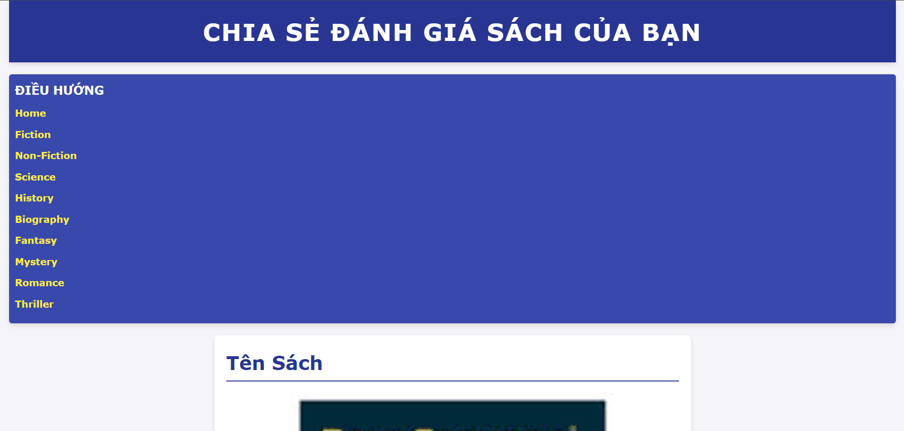

Chi Tiết Dự Án
Nền tảng trực tuyến cho phép người dùng đánh giá và nhận xét về các cuốn sách, với tính năng gợi ý sách dựa trên sở thích và các đánh giá trước đó. Hệ thống được tích hợp với API để lấy thông tin sách từ các nguồn khác nhau.
Công nghệ sử dụng: HTML, CSS, JavaScript, Node.js
Thời gian thực hiện: 4 tháng
